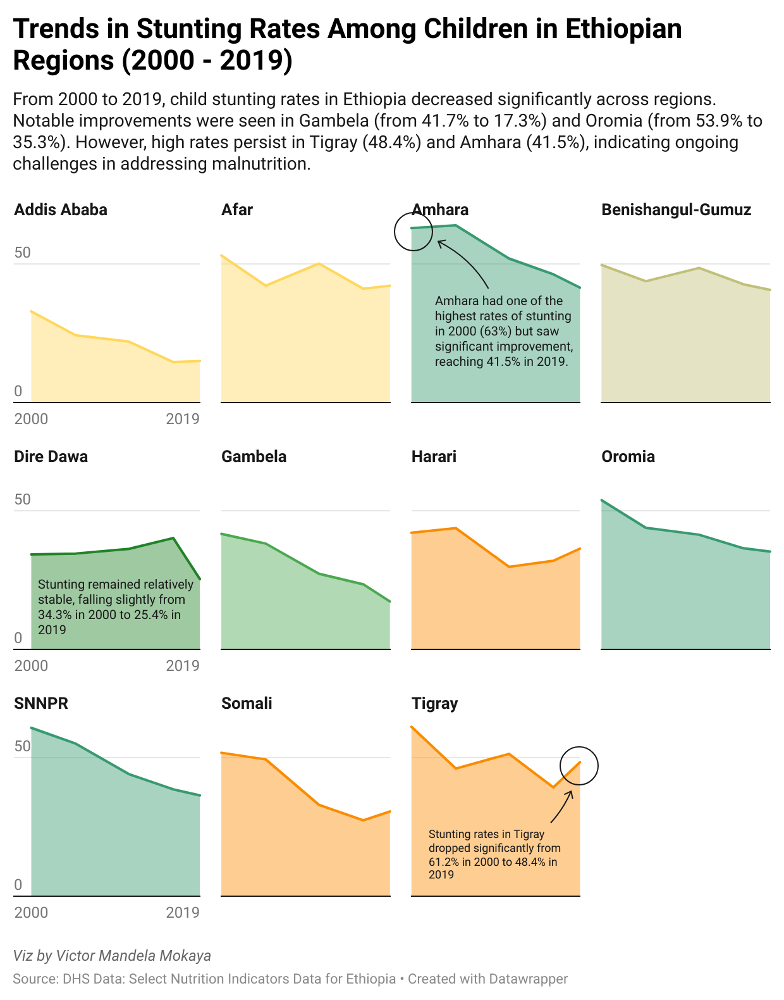

Introduction
Ethiopia has made significant strides in improving child nutrition over the past two decades. However, child stunting remains a pressing issue, with many regions still facing alarming rates. This blog post analyzes the stunting rates across various Ethiopian regions from 2000 to 2019, highlighting the progress made, the persistent challenges, and the implications for donors and investors looking to improve child health outcomes.
Key Definitions
Child Stunting: A form of chronic malnutrition characterized by low height for age. Stunting is a critical indicator of a child’s health and nutritional status and can have long-term impacts on cognitive development and economic productivity.
Malnutrition: Refers to deficiencies, excesses, or imbalances in a person’s intake of energy and/or nutrients. It encompasses undernutrition (including stunting, wasting, and underweight) as well as overnutrition (obesity).
Demographic and Health Surveys (DHS): Nationally representative surveys conducted in many countries to collect data on health and nutrition, providing essential insights for policymakers and stakeholders.
Why Should You Care?
Child stunting is not just a personal health issue; it has far-reaching implications for communities and nations. High rates of stunting can lead to:
Economic Consequences: Malnourished children are more likely to underperform in school and have lower productivity as adults, which can hinder national development.
Healthcare Burden: Increased stunting rates correlate with higher healthcare costs due to related health complications.
Intergenerational Effects: Poor nutrition can affect not just the current generation but also future generations, perpetuating cycles of poverty and malnutrition.
Addressing child stunting is crucial for achieving sustainable development goals, particularly those related to health, education, and poverty reduction.
Trends in Child Stunting Rates

Based on data from the DHS, the stunting rates of children under five in Ethiopia have shown varying trends across regions. Below is a summary of the key findings:
Tigray: Stunting rates decreased from 61.2% in 2000 to 48.4% in 2019, indicating progress but still reflecting high levels of chronic malnutrition.
Afar: A reduction from 53.1% to 42.2% showcases improvements, yet the region faces significant environmental challenges.
Amhara: Although stunting rates dropped from 63% to 41.5%, the high prevalence highlights ongoing nutritional concerns.
Oromia: This region improved from 53.9% to 35.3%, signaling effective interventions but still necessitating further efforts.
Somali: A notable decline from 51.8% to 30.6% demonstrates progress, but vulnerability to food insecurity persists.
Benishangul-Gumuz: Stunting decreased from 49.7% to 40.7%, indicating a need for targeted interventions in remote areas.
SNNPR: A drop from 60.8% to 36.4% reflects significant improvements, but further action is essential to address diverse needs.
Gambela: This region saw a remarkable decline from 41.7% to 17.3%, showcasing the potential for successful interventions.
Harari: Stunting fell from 42.1% to 36.4%, signaling a need for urban-based nutrition strategies.
Addis Ababa: Stunting rates dropped from 32.9% to 15%, indicating positive trends in urban health initiatives.
Dire Dawa: A slight decrease from 34.3% to 25.4% suggests persistent urban challenges related to food security.
Implications for Donors and Investors
The findings underscore a dual narrative: while there has been substantial progress in reducing stunting rates across many regions, significant challenges remain in others. Donors and investors can play a crucial role in supporting initiatives that target both immediate and long-term solutions to child malnutrition. Here are some key messages for consideration:
Targeted Interventions: Regions like Tigray and Amhara require focused nutritional programs to combat high stunting rates. Investments in health and nutrition initiatives can yield significant benefits for child development.
Climate Resilience: Areas like Afar and Somali highlight the need for investments in climate-resilient agriculture and food systems to mitigate the impact of environmental shocks on food security.
Urban Strategies: The challenges faced by urban areas like Dire Dawa and Harari necessitate tailored approaches to address nutrition and food access in densely populated settings.
Replication of Success: The dramatic reduction in stunting rates in Gambela serves as a model for what can be achieved with sustained support and targeted interventions. Donors can explore strategies to replicate these successes in other vulnerable regions.
Data Analysis Code in R
To analyze stunting rates in Ethiopia using DHS data follow the following R code:
#Load library
library(tidyverse)
# Loading the data
eth_food <- readr::read_csv("https://data.humdata.org/dataset/6e5d9d29-656e-40ec-9d42-e827777a94ad/resource/517a9d11-7e4b-4e0f-be29-5e9f8429345b/download/select-nutrition-indicators_subnational_eth.csv")
#Transform the data
trans_eth <- eth_food %>%
select(2, 4, 5,9) %>%
filter(Indicator == "Children stunted") %>% # Children stunted data
select(-Indicator) %>%
group_by(SurveyYear) %>%
pivot_wider(names_from = Location,
values_from = Value)
# do not run this part -- used in the datawrapper app for viz
#write_csv(trans_eth, "ethiopia_children_stunted_wasted.csv")Data Source
This analysis utilizes data from the Demographic and Health Surveys (DHS), which provides comprehensive data on health and nutrition indicators across various countries, including Ethiopia.
Conclusion
While Ethiopia has made remarkable progress in reducing child stunting, ongoing challenges must be addressed to sustain and accelerate these gains. By investing in targeted interventions and promoting climate resilience, donors can help ensure that every child in Ethiopia has the opportunity for a healthy start in life. Addressing child stunting is not only a moral imperative but also a strategic investment in the future of the nation.